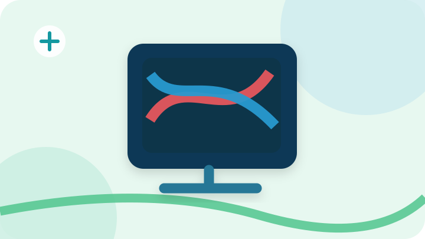

![رسم توضيحي: دوبلر شرايين الأطراف]()
معلومات طبية مبسطة
أشعة الدوبلر الملون
فحوصات لتقييم اتجاه وسرعة تدفق الدم في الشرايين والأوردة.

عن هذه الخدمة
ما المقصود بـأشعة الدوبلر الملون؟
يستخدم الدوبلر تقنية الموجات فوق الصوتية لعرض معلومات عن حركة الدم. يساعد في تقييم مشكلات الأوعية الدموية في مناطق متعددة، وقد يُدمج مع التصوير التقليدي للسونار.
![رسم توضيحي: دوبلر أوردة الأطراف]()
دوبلر أوردة الأطراف
تقييم أوردة الأطراف والمساعدة في الكشف عن وجود جلطة وريدية عند الاشتباه بها.
معلومات وتحضيرات الفحص![رسم توضيحي: دوبلر شرايين الرقبة]()
![رسم توضيحي: دوبلر أوعية الكلى]()
![رسم توضيحي: دوبلر الأوعية الكبدية والوريد البابي]()
دوبلر الأوعية الكبدية والوريد البابي
تقييم تدفق الدم في أوعية الكبد والوريد البابي.
معلومات وتحضيرات الفحص![رسم توضيحي: دوبلر الخصيتين]()
تنبيه مهم
هذه المعلومات للتثقيف فقط، ولا تُعد توصية بإجراء الفحص أو تشخيصًا. تختلف متطلبات التحضير والتوفر وفق حالة المريض وتوجيه الطبيب. يُرجى الاتصال قبل الحضور للتأكد من الخدمة.
التواصل مع العيادة
هل لديك استفسار عن الفحص؟
السبت إلى الخميس · 8 صباحًا – 10 مساءً · الجمعة إجازة
صنعاء – شارع الزبيري – برج المختبرات الدولية